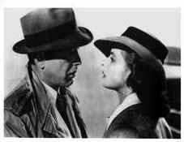
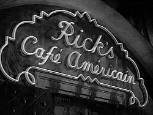
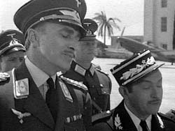
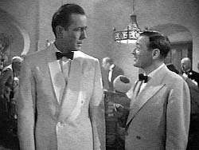
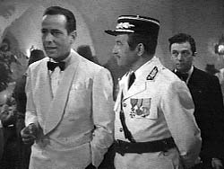
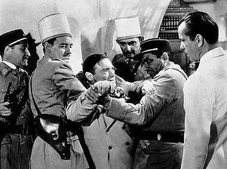

|

Texto de
Susana
Lopes de Alexandria

Ttulo
foi tirado de "Casablanca"

|
 "Casablanca", uma das mais famosas histrias de amor do cinema, serviu de inspirao para o episdio "We'll Always Have Paris", cujo ttulo foi tirado de um dos dilogos do filme.O filme "Casablanca" (1942), estrelado por Humphrey Bogart e Ingrid Bergman (foto), um dos mais cultuados de Hollywood e figura em todas as listas que se fazem sobre os melhores filmes de todos os tempos, no raro em primeirssimo lugar. Foi indicado para oito Oscars e ganhou trs: melhor filme, direo e roteiro. O filme se passa durante a Segunda Guerra Mundial em Casablanca, no Marrocos. Veja abaixo (e nas prximas pginas) um resumo do filme, todo ilustrado com fotos (e msica), e perceba as semelhanas entre o famoso filme e a histria do capito Picard e seu amor do passado. E descubra de qual cena foi tirado o ttulo do episdio "We'll Always Have Paris". O filme comea com um narrador explicando o perodo histrico e o lugar onde se passa a histria. Durante a Segunda Guerra, milhares de pessoas desejam fugir da Europa para a liberdade das Amricas. Lisboa, em Portugal, torna-se um importante ponto de embarque. Mas nem todo mundo consegue ir direto para Lisboa. Assim, uma tortuosa rota leva os refugiados para a liberdade: de Paris para Marselha; cruzando o Mediterrneo para Oran; depois, de trem, de carro ou a p, das fronteiras da frica at Casablanca, no Marrocos, uma possesso francesa. Ali, os que tm sorte, dinheiro ou influncia conseguem um visto de sada para Lisboa e, de l, para o mundo livre. Os outros enfrentam uma espera interminvel em Casablanca.
 Richard "Rick" Blaine (Humphrey Bogart), um americano exilado e ex-militante pela liberdade, dirige o night club mais concorrido de Casablanca, o Rick's - Caf Amricain. Rick, um homem cnico e solitrio, evita envolver-se em questes polticas e diz apenas querer dirigir seu bar em paz.  Quando o major nazista Strasser (Conrad Veidt) chega em Casablanca, o bajulador capito de polcia Louis Renault (Claude Rains) faz o que pode para agrad-lo, inclusive prometendo deter o lder militante tcheco Victor Laszlo, que est para chegar em Casablanca.  Enquanto isso, Ugarte (Peter Lorre), envolvido no comrcio ilegal de vistos de sada, pede a Rick que guarde dois valiosos documentos que ele pretende vender a preo de ouro a duas pessoas que esto para chegar em Casablanca. Os documentos so salvo-condutos que ele roubara de dois mensageiros alemes, aps mat-los, e que permitem o embarque legal para Lisboa.  O capito Renault, porm, sabe que foi Ugarte quem matou os mensageiros alemes. Para mostrar servio ao major nazista Strasser, ele o convida para visitar o Rick's Caf, onde efetuar a priso de Ugarte. Renault avisa Rick sobre a priso. Fala tambm que precisa deter Victor Laszlo em Casablanca. Rick aposta 10 mil francos com Renault que o famoso militante Laszlo vai conseguir fugir de novo.  Ugarte recebe voz de priso no Rick's Caf. Rick tem agora em suas mos dois vistos de sada que podem ser comercializados por uma fortuna. Ele esconde os documentos dentro do piano do bar. |